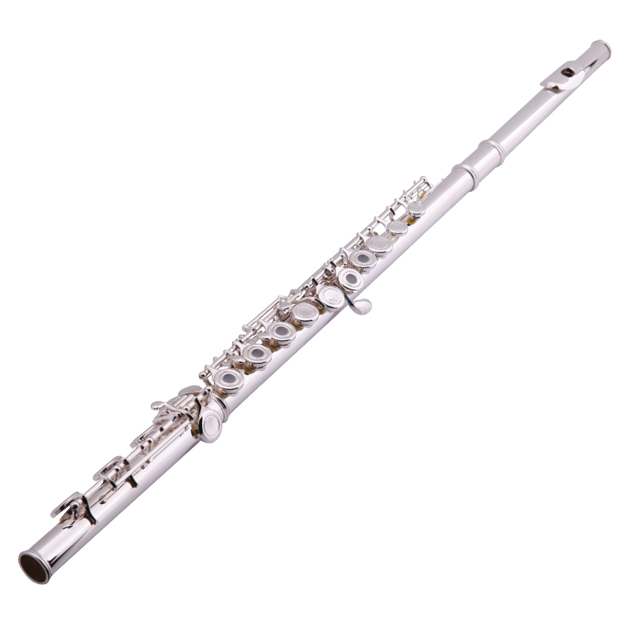

Флейта
Флейта - это древний музыкальный инструмент, который принадлежит к семейству деревянных духовых инструментов. Он известен своим светлым и чистым звуком, который создается путем вдувания воздуха в узкий отверстие, расположенное на одном из концов инструмента.
Флейты могут иметь различные размеры и диапазоны, и они используются в разнообразных музыкальных жанрах. В классической музыке флейта является важной частью оркестра и духовых ансамблей, в то время как в фольклорной музыке она может быть использована как сольный инструмент.
Этот изящный инструмент имеет длинную историю, восходящую к древним временам. Флейты были широко распространены в культурах Европы и стали символом грации и элегантности.
Игрок на флейте управляет высотой звука, покрывая и открывая отверстия на инструменте. Эта техника позволяет создавать разнообразные мелодии и вносить изысканные нюансы в исполнение.
В музыкальной традиции Европы флейта занимает почетное место, придавая музыке воздушную легкость и эмоциональное насыщение.